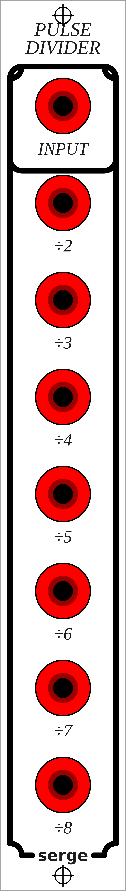

Pulse Divider & Boolean Logic
Boolean Logic · Pulse Divider · CGS36
A pulse divider (2 to 8) and a set of logic gates (AND, OR, XOR, inverters) for gates, clocks and rhythms.
- Design
- Ken Stone (CGS36, CGS54); Low-Gain LGE038
- Function
- Logic / divider
- Panel widths
- 1", 2"
- Build options
- 3
Panels in this repo


How it works
The divider gives one output pulse every 2, 3 ... 8 input pulses, all locked together, for poly-rhythms; at audio rate it works as a sub-oscillator.
The logic sections combine gates: AND is high only while both inputs are, OR while either is, XOR while exactly one is; the inverters flip a gate. Ken Stone's CGS54 adds XOR / XNOR and responds to the difference between two voltages, so it can also compare analog signals.
Controls and jacks
| Name | Type | What it does |
|---|---|---|
| INPUT / CLOCK | input | Pulses to divide. |
| ÷2 to ÷8 | outputs | Divided pulses. |
| RESET | input / button | Restarts the divider. |
| IN A, IN B | inputs | Logic inputs. |
| AND, OR, XOR / XNOR | outputs | Logic results. |
| INVERTER IN / OUT | jacks | Inverts a gate. |
Build options
Elby Designs CGS336 Pulse Divider
- Offered as
- PCB or component kit from Elby Designs; datasheet, build guide, schematics and kit BOM on Elby's page
- Format
- CGS 4U boards, wired to the panel
- PCB
- Elby Designs: CGS336 Pulse Divider
- Schematic
- availableSchematics in Elby's build guide
- BOM
- availableElby's component kit BOM (PDF)
Order the PCB or kit: https://www.elby-designs.com/contents/en-au/p1411_CGS336---Pulse-Divider.html
Ken Stone's original page (earlier board, background and how it works): https://open4umodular.github.io/synthpanel/modules/cgs36_pulse_divider.html
Elby Designs CGS405 Boolean Logic
- Offered as
- PCB or component kit from Elby Designs; datasheet, build guide, schematics and kit BOM on Elby's page
- Format
- CGS 4U boards, wired to the panel
- PCB
- Elby Designs: CGS405 Boolean Logic
- Schematic
- availableSchematics in Elby's build guide
- BOM
- availableElby's component kit BOM (PDF)
Order the PCB or kit: https://www.elby-designs.com/contents/en-au/p1412_CGS405---Boolean-Logic.html
The logic half of the old CGS36: NOT, OR and AND elements. Elby's stacking kit fits it on top of a CGS336 where the panel has only 2" of PCB space.
Low-Gain LGE038 Discrete Logic Gates
- Offered as
- Assembled module or DIY PCBs
- Format
- 4U Serge, Loudest Warning-style mounting
- Schematic
- listed, not linked yetBoard documents on the product page
- BOM
- availableLGE038 Bill of Materials
- Documents
- LGE038 Bill of Materials
Transistor logic with AND, NAND, OR, NOR, XOR, XNOR and two inverters; it fits the STS Boolean Logic panel (no divider).
Low-Gain boards set their own jack positions; check them against the panel you use.
Ken Stone's Serge-derived designs may be built for personal use only; Serge Tcherepnin keeps all rights to his circuits. Schematics, parts lists and PCBs belong to their designers and sellers, so these pages link to them rather than copying them.
Bill of materials
Spreadsheet: pulse-divider-boolean-logic.csv (CSV; opens in Excel, Numbers or Google Sheets). It lists the parts for every build option: Ken Stone's parts lists, and the parts data from Low-Gain's, Prism's and Elby's own BOMs where they publish one.
Order from Mouser: pulse-divider-boolean-logic__elbykit_cgs336.csv (20 lines, about $20.44 at single-unit prices), pulse-divider-boolean-logic__elbykit_cgs405.csv (16 lines, about $11.05 at single-unit prices). Files ending _cart are made from a maker's own Mouser cart. Upload one at Mouser's BOM tool (it reads the Mouser and manufacturer part number columns). Parts Mouser doesn't stock are listed in pulse-divider-boolean-logic__elbykit_cgs336_not_at_mouser.csv, pulse-divider-boolean-logic__elbykit_cgs405_not_at_mouser.csv.
Check stock and price before ordering: 9 lines in these files (marked [UNVERIFIED] in the Description column) use part numbers built from the manufacturers' numbering and not yet checked on mouser.com; their prices are estimates. The BOM tool flags anything it can't find or that is out of stock.
All builds (2 lines)
| Section | Type | Value / part | Qty | Notes |
|---|---|---|---|---|
| Front panel (STS / modern) | Panel hardware | Banana jack, red | 8 | 4 mm |
| Front panel (STS / modern) | Panel hardware | Knob | 0 | one per pot |
Elby Designs CGS336 Pulse Divider (21 lines)
| Section | Type | Value / part | Qty | Notes |
|---|---|---|---|---|
| CGS336 (Elby kit BOM) board | Capacitor | 10nF (63V Polyester) | 1 | from https://www.elby-designs.com/webtek/cgs/cgs3xx/cgs336/kc-2-cgs336.pdf |
| CGS336 (Elby kit BOM) board | Capacitor | 10nF (5% Ceramic) | 1 | from https://www.elby-designs.com/webtek/cgs/cgs3xx/cgs336/kc-2-cgs336.pdf |
| CGS336 (Elby kit BOM) board | Capacitor | 100nF (Ceramic) | 6 | from https://www.elby-designs.com/webtek/cgs/cgs3xx/cgs336/kc-2-cgs336.pdf |
| CGS336 (Elby kit BOM) board | Capacitor | 10uF (35V Electrolytic) | 2 | from https://www.elby-designs.com/webtek/cgs/cgs3xx/cgs336/kc-2-cgs336.pdf |
| CGS336 (Elby kit BOM) board | Misc | 3-way 0.1inch Straight Header | 1 | from https://www.elby-designs.com/webtek/cgs/cgs3xx/cgs336/kc-2-cgs336.pdf; Mouser part not checked yet: verify stock and price |
| CGS336 (Elby kit BOM) board | Misc | CRIMP - KK254 | 3 | from https://www.elby-designs.com/webtek/cgs/cgs3xx/cgs336/kc-2-cgs336.pdf; Mouser part not checked yet: verify stock and price |
| CGS336 (Elby kit BOM) board | Misc | 3-way 0.1inch Crimp Housing | 1 | from https://www.elby-designs.com/webtek/cgs/cgs3xx/cgs336/kc-2-cgs336.pdf; Mouser part not checked yet: verify stock and price |
| CGS336 (Elby kit BOM) board | Misc | 8-pin IC Socket 0.3inch | 1 | from https://www.elby-designs.com/webtek/cgs/cgs3xx/cgs336/kc-2-cgs336.pdf; Mouser part not checked yet: verify stock and price |
| CGS336 (Elby kit BOM) board | Misc | 16-pin IC Socket 0.3inch | 4 | from https://www.elby-designs.com/webtek/cgs/cgs3xx/cgs336/kc-2-cgs336.pdf; Mouser part not checked yet: verify stock and price |
| CGS336 (Elby kit BOM) board | Semiconductor | 1N4148 | 17 | from https://www.elby-designs.com/webtek/cgs/cgs3xx/cgs336/kc-2-cgs336.pdf |
| CGS336 (Elby kit BOM) board | Semiconductor | TL072 Dual JFET Opamp | 1 | from https://www.elby-designs.com/webtek/cgs/cgs3xx/cgs336/kc-2-cgs336.pdf |
| CGS336 (Elby kit BOM) board | Misc | Ferrite bead (Ferrite Bead - 5A) | 2 | from https://www.elby-designs.com/webtek/cgs/cgs3xx/cgs336/kc-2-cgs336.pdf |
| CGS336 (Elby kit BOM) board | Semiconductor | CD4017 - Decade Counter/Divider | 4 | from https://www.elby-designs.com/webtek/cgs/cgs3xx/cgs336/kc-2-cgs336.pdf |
| CGS336 (Elby kit BOM) board | Resistor | 1K (1% 0.5W Metal Film) | 7 | from https://www.elby-designs.com/webtek/cgs/cgs3xx/cgs336/kc-2-cgs336.pdf |
| CGS336 (Elby kit BOM) board | Resistor | 1K5 (1% 0.5W Metal Film) | 7 | from https://www.elby-designs.com/webtek/cgs/cgs3xx/cgs336/kc-2-cgs336.pdf |
| CGS336 (Elby kit BOM) board | Resistor | 4K7 (1% 0.5W Metal Film) | 7 | from https://www.elby-designs.com/webtek/cgs/cgs3xx/cgs336/kc-2-cgs336.pdf |
| CGS336 (Elby kit BOM) board | Resistor | 10K (1% 0.5W Metal Film) | 2 | from https://www.elby-designs.com/webtek/cgs/cgs3xx/cgs336/kc-2-cgs336.pdf |
| CGS336 (Elby kit BOM) board | Resistor | 15K (1% 0.5W Metal Film) | 1 | from https://www.elby-designs.com/webtek/cgs/cgs3xx/cgs336/kc-2-cgs336.pdf |
| CGS336 (Elby kit BOM) board | Resistor | 100K (1% 0.5W Metal Film) | 12 | from https://www.elby-designs.com/webtek/cgs/cgs3xx/cgs336/kc-2-cgs336.pdf |
| CGS336 (Elby kit BOM) board | Resistor | 4M7 (1% 0.5W Metal Film) | 2 | from https://www.elby-designs.com/webtek/cgs/cgs3xx/cgs336/kc-2-cgs336.pdf |
| CGS336 (Elby kit BOM) board | Semiconductor | BC547B NPN Transistor | 7 | from https://www.elby-designs.com/webtek/cgs/cgs3xx/cgs336/kc-2-cgs336.pdf |
Elby Designs CGS405 Boolean Logic (16 lines)
| Section | Type | Value / part | Qty | Notes |
|---|---|---|---|---|
| CGS405 (Elby kit BOM) board | Capacitor | 100nF (Ceramic) | 2 | from https://www.elby-designs.com/webtek/cgs/cgs4xx/cgs405/kc-2-cgs405.pdf |
| CGS405 (Elby kit BOM) board | Capacitor | 10uF (35V Electrolytic) | 2 | from https://www.elby-designs.com/webtek/cgs/cgs4xx/cgs405/kc-2-cgs405.pdf |
| CGS405 (Elby kit BOM) board | Misc | 8-pin IC Socket 0.3inch | 1 | from https://www.elby-designs.com/webtek/cgs/cgs4xx/cgs405/kc-2-cgs405.pdf; Mouser part not checked yet: verify stock and price |
| CGS405 (Elby kit BOM) board | Misc | 3-way 0.1inch Straight Header | 1 | from https://www.elby-designs.com/webtek/cgs/cgs4xx/cgs405/kc-2-cgs405.pdf; Mouser part not checked yet: verify stock and price |
| CGS405 (Elby kit BOM) board | Misc | 3-way 0.1inch Crimp Housing | 1 | from https://www.elby-designs.com/webtek/cgs/cgs4xx/cgs405/kc-2-cgs405.pdf; Mouser part not checked yet: verify stock and price |
| CGS405 (Elby kit BOM) board | Misc | CRIMP - KK254 | 3 | from https://www.elby-designs.com/webtek/cgs/cgs4xx/cgs405/kc-2-cgs405.pdf; Mouser part not checked yet: verify stock and price |
| CGS405 (Elby kit BOM) board | Semiconductor | 1N4148 | 11 | from https://www.elby-designs.com/webtek/cgs/cgs4xx/cgs405/kc-2-cgs405.pdf |
| CGS405 (Elby kit BOM) board | Semiconductor | TL072 Dual JFET Opamp | 1 | from https://www.elby-designs.com/webtek/cgs/cgs4xx/cgs405/kc-2-cgs405.pdf |
| CGS405 (Elby kit BOM) board | Misc | Ferrite bead (Ferrite Bead - 5A) | 2 | from https://www.elby-designs.com/webtek/cgs/cgs4xx/cgs405/kc-2-cgs405.pdf |
| CGS405 (Elby kit BOM) board | Resistor | 1K (1% 0.5W Metal Film) | 9 | from https://www.elby-designs.com/webtek/cgs/cgs4xx/cgs405/kc-2-cgs405.pdf |
| CGS405 (Elby kit BOM) board | Resistor | 1K5 (1% 0.5W Metal Film) | 7 | from https://www.elby-designs.com/webtek/cgs/cgs4xx/cgs405/kc-2-cgs405.pdf |
| CGS405 (Elby kit BOM) board | Resistor | 4K7 (1% 0.5W Metal Film) | 5 | from https://www.elby-designs.com/webtek/cgs/cgs4xx/cgs405/kc-2-cgs405.pdf |
| CGS405 (Elby kit BOM) board | Resistor | 10K (1% 0.5W Metal Film) | 8 | from https://www.elby-designs.com/webtek/cgs/cgs4xx/cgs405/kc-2-cgs405.pdf |
| CGS405 (Elby kit BOM) board | Resistor | 100K (1% 0.5W Metal Film) | 9 | from https://www.elby-designs.com/webtek/cgs/cgs4xx/cgs405/kc-2-cgs405.pdf |
| CGS405 (Elby kit BOM) board | Semiconductor | BC547B NPN Transistor | 4 | from https://www.elby-designs.com/webtek/cgs/cgs4xx/cgs405/kc-2-cgs405.pdf |
| CGS405 (Elby kit BOM) board | Semiconductor | BC557B PNP Transistor | 2 | from https://www.elby-designs.com/webtek/cgs/cgs4xx/cgs405/kc-2-cgs405.pdf |
Low-Gain LGE038 Discrete Logic Gates (1 lines)
| Section | Type | Value / part | Qty | Notes |
|---|---|---|---|---|
| Board | See the maker's BOM | LGE038 Bill of Materials - https://drive.google.com/file/d/1KFuaGHrqsI8GeOYmfV5QxG4BQdWnsAi-/view |
Panel hardware
Front-panel parts for each panel in this repo, counted from the panel files. Board parts (resistors, ICs, trimmers) are in each build option's own BOM.
STS / modern
| Part | Qty | Note |
|---|---|---|
| Banana jack, red | 8 | 4 mm |
| Mounting screw | 2 | panel to rails |
STS / modern
| Part | Qty | Note |
|---|---|---|
| Banana jack, blue | 6 | 4 mm |
| Banana jack, red | 7 | 4 mm |
| LED | 3 | |
| Mounting screw | 4 | panel to rails |
CGS (Catgirl) Logic
| Part | Qty | Note |
|---|---|---|
| Banana jack, red | 8 | 4 mm |
| Mounting screw | 2 | panel to rails |
CGS (Catgirl) Boolean Logic
| Part | Qty | Note |
|---|---|---|
| Banana jack, red | 8 | 4 mm |
| Mounting screw | 2 | panel to rails |
CGS (Catgirl) Divider & Logic
| Part | Qty | Note |
|---|---|---|
| Banana jack, red | 15 | 4 mm |
| LED | 9 | |
| Mounting screw | 4 | panel to rails |
| Push button | 1 |